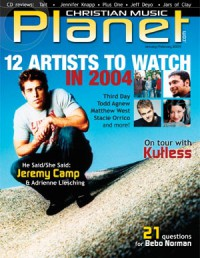

CMnexus: Contemporary Christian culture, music, and media.
|
|
Christian Music Planet, Jan / Feb 2004, vol. 3, iss. 1
| Cover |
|---|
|  | | Writers in this Issue |
|---|
Black, Beau
Breimeier, Russell
DuBois, Linda
Fernandez, Michael
Isaac, Jenni
Joyce, Chris
McDonald, Norm
Preece, Jeremy
Rumburg, Gregory J
Urbanski, Dave
Zschech, Darlene
|
Cover Feature:Article:
- "Life With Kutless" by Jenni Isaac
- "Run, Stacie, Run" by Gregory J Rumburg
21 Things You Always Wanted To Know About...:12 Artists to Watch in 2004:New & Debut:Album Review:In The Spirit:Relevant LinksYou may be able to find Christian Music Planet in a library near you: check Worldcat |